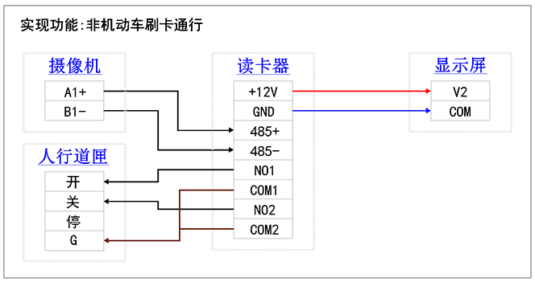
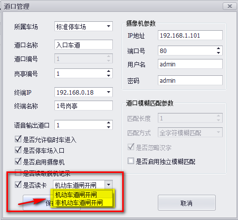
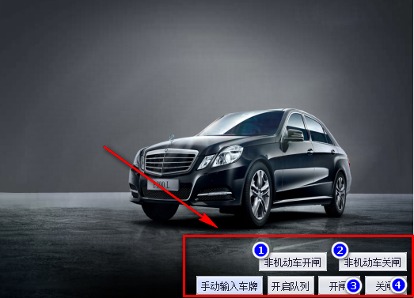
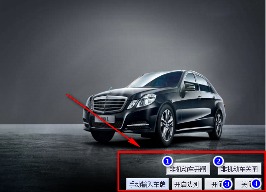

非机动车刷卡功能详解
管理软件支持人行通道的刷卡控制.
使用条件:需要单独购买我公司指定的刷卡器,发卡器和卡片.
1.接线方式
除了需要按照常规方式接线外,还需额外接刷卡器的线路.
参照如下接线图:

可能有些应用场景不是通过道匣控制人行通道, 如使用门禁的方式控制,这时就需要灵活的调整刷卡器输出端(NO,COM,NC端口)的线路;如没有单独的人行通道,即人车混用机动车道的,刷卡器的输出端不用接线.
2.开启本功能
启动软件,在主界面找到"车道设置"并打开.
选中装了刷卡器的车道,并编辑该车道信息.

① 勾选"是否读卡",表示启用该车道的刷卡控制功能.
② 在下拉框中选择对应的车道类型.
a."机动车道匣开匣":就是人车混用机动车道,即没有独立的人行通道.
b."非机动车道匣开匣":人车分流,有独立的人行通道.
如法设置其它车道.
也可在增加车道时按上述方法配置车道参数.
3.发行卡片
a.发行固定卡
进入"车辆管理"界面,选择"快速增加车辆".步骤如下图:
 注意:卡片需另建用户发行,以下发行方式是错误的.
注意:卡片需另建用户发行,以下发行方式是错误的.
 也可按照常规方式,先在"用户管理"新建用户,再为该用户录入卡片.
b.发行临时卡
发行方法与固定卡基本相同,不同的主要是以下两点:
也可按照常规方式,先在"用户管理"新建用户,再为该用户录入卡片.
b.发行临时卡
发行方法与固定卡基本相同,不同的主要是以下两点:
 临时卡一般会放在吐卡机内自动发卡.
登记临时卡避免了外来卡片随意刷卡进入.
卡片内码可直接通过发卡器读出,操作方式很简单:
将发卡器通讯线插入电脑USB口,输入法切换为英文输入法,在卡片内码栏点击鼠标,然后将要发行的卡片在
发卡器刷一下即可读出卡片内码.
临时卡一般会放在吐卡机内自动发卡.
登记临时卡避免了外来卡片随意刷卡进入.
卡片内码可直接通过发卡器读出,操作方式很简单:
将发卡器通讯线插入电脑USB口,输入法切换为英文输入法,在卡片内码栏点击鼠标,然后将要发行的卡片在
发卡器刷一下即可读出卡片内码.
3.远程控制人行通道开关
启动软件进入实时监控.
根据车道类型的不同,实时监控界面也有不同.
a.车道类型是"机动车道匣开匣"的,其实时监控界面与常规的一样,如下图:
 点击①所示按钮将调用车牌识别相机的继电器开机动车道匣;
点击②所示按钮将调用车牌识别相机的继电器关机动车道匣;
b.车道类型是"非机动车道匣开匣"的,其实时监控界面如下图:

点击①所示按钮将调用刷卡器的继电器开人行通道匣;
点击②所示按钮将调用刷卡器的继电器关人行通道匣;
点击③所示按钮将调用车牌识别相机的继电器开机动车道匣;
点击④所示按钮将调用车牌识别相机的继电器关机动车道匣;
所以选择"非机动车道匣开匣"的,刷卡器输出端一定要接控制线路.
点击①所示按钮将调用车牌识别相机的继电器开机动车道匣;
点击②所示按钮将调用车牌识别相机的继电器关机动车道匣;
b.车道类型是"非机动车道匣开匣"的,其实时监控界面如下图:

点击①所示按钮将调用刷卡器的继电器开人行通道匣;
点击②所示按钮将调用刷卡器的继电器关人行通道匣;
点击③所示按钮将调用车牌识别相机的继电器开机动车道匣;
点击④所示按钮将调用车牌识别相机的继电器关机动车道匣;
所以选择"非机动车道匣开匣"的,刷卡器输出端一定要接控制线路.
4.相关参数配置
找开软件根目录,找到"Config"文件夹下的"ExtendConfig"文件,用记事本格式打开,如下图:

 NoRegiestCardIn:该选项的value属性值设为1表示外来卡允许刷卡进场,建议设为0,只允许登记的卡进出.
NoRegiestCardPlayVoice:该选项的value属性值设为1表示外来卡刷卡有提示语音,建议设为1,警醒非法卡刷卡测试.
MonthlyCardNoEntryOut:该选项的value属性值设为1表示登记的固定卡没有进场记录也可以出场,建议设为1.
NoRegiestCardIn:该选项的value属性值设为1表示外来卡允许刷卡进场,建议设为0,只允许登记的卡进出.
NoRegiestCardPlayVoice:该选项的value属性值设为1表示外来卡刷卡有提示语音,建议设为1,警醒非法卡刷卡测试.
MonthlyCardNoEntryOut:该选项的value属性值设为1表示登记的固定卡没有进场记录也可以出场,建议设为1.